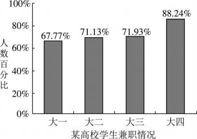

yy-2013-48
48. Directions:
Write an essay based on the following chart. In your writing, you should
1) interpret the chart, and
2) give your comments.
You should write about 150 words on the ANSWER SHEET.

The rate of college students taking part-time jobs during school time rises annually from 67.77% in the first year to 88.24% in the final year. The biggest increase occurs in the graduation year, with the rate 16% higher than a year ago.
College students will become increasingly willing to work part-time mainly because of the growing wish to gain practical experience to prepare for their later careers. It is reasonable and wise to do such preparation especially after unemployment reached a record high in early 2013. Another motive is obviously the money. As the school year advances, there will be huger costs of studying materials and social events, undoubtedly pushing students to reap money from part-time jobs.
It can indeed be beneficial for college students to be part-timers. However, the risk of erosion of study time should be also considered. To benefit from part-time jobs without suffering academically, students should learn to strike a balance.
本题讲解：2013 大作文——图表作文的「描图—析因—评论」三段机制
答案（参考范文要点口径）：段 1 描图：兼职率逐年上升，从大一 67.77% 到大四 88.24%，最大增幅在大四（比前一年高约 16%）；段 2 析因：动机一是为职业积累实践经验（2013 年初失业率创新高更凸显其合理），动机二是高年级花费增多、靠兼职挣钱；段 3 评论：兼职确有益处，但须防学习时间被侵蚀，应学会在学业与工作间求平衡。以下范文要点为自行组织版本，内容口径与参考一致：
The chart shows the proportion of college students taking part-time jobs in a university, rising steadily from 67.77% among freshmen to 88.24% among seniors. The most noticeable jump occurs in the final year, when the rate is about 16% higher than that of the previous year. Two motives drive the trend. The first is the growing wish to gain practical experience for future careers — a preparation that seems all the more sensible when unemployment hit a record high in early 2013. The other is money: as students move into higher grades, they spend more on study materials and social activities, so part-time jobs become an obvious way to cover the costs. Working part-time does benefit students, yet it may eat into study time. To gain without academic loss, students should learn to strike a balance between work and study.
第 0 步：先立机制——图表作文的分怎么挣
大作文两个指令：1) interpret the chart（图表说了什么）+ 2) give your comments（你怎么看）。机制对应三段式：描图给"是什么"，析因给"为什么"，评论给"怎么看"——描图不评论、析因不描写、评论不重复，各段功能不串门。柱状图读法先抓两件事：总体趋势（四个年级一起看）与最显眼的数据点（跳变最大的一年）。
| 年级 | 兼职比率 | 读法 |
|---|---|---|
| 大一 | 67.77% | 起点已过半数——兼职在大学并不边缘 |
| 大二 | 71.13% | 平缓上升 |
| 大三 | 71.93% | 几乎持平——上升并非线性 |
| 大四 | 88.24% | 最大增幅（比前一年高约 16%）——毕业年兼职近乎全员 |
读图结论：话题 = 大学生兼职；直接信息 = 兼职率逐年级上升，最大增幅出现在大四。隐忧（可能挤占学业）留给评论段，不在描图段夹带。
第 1 步：段 1 描图——趋势一句 + 重点数据一句
- 趋势句主语选 rate/proportion（比率），谓语 rises/increases，范围用 from…to…打包：from 67.77% in the first year to 88.24% in the final year——一句画完整条柱状图。
- 重点数据句：the biggest increase occurs in the graduation year, with the rate about 16% higher than a year ago——with 复合结构补差值，比再造一句更紧凑。
- 描图段只陈述事实、不加评论；" steadily / most noticeable "这类词是给数据"定调"，不算评论。
第 2 步：段 2 析因——两个动机，一虚一实
- 动机一（经验）：the growing wish to gain practical experience for future careers——名词化主语（wish）比从句紧凑；再用失业率背景（unemployment reached a record high in early 2013）反证其合理：It is reasonable and wise to do such preparation。
- 动机二（钱）：as the school year advances, there will be huger costs of studying materials and social events, undoubtedly pushing students to reap money from part-time jobs——As 状语从句 + there be 客观陈述 + 现在分词结果状语（pushing），一句话讲完"高年级 → 花费多 → 去挣钱"的因果链。
- 两个动机的排布：先虚（职业动机，长句）后实（金钱动机，短句点题后展开）——层次清楚。
第 3 步：段 3 评论——先让步后转折，落在建议
- 让步句：It can indeed be beneficial to be part-timers（先承认益处——与段 2 的动机呼应，动机达成即益处，不必重论）。
- 转折句：However, the risk of erosion of study time should be considered——图表话题内的隐忧是"挤占学业"，不跑到社会道德上去。
- 建议收尾：To benefit from part-time jobs without suffering academically, students should learn to strike a balance（between study and work）——评论落在可执行的建议上，全篇收口。
第 4 步：语言升格——必备搭配清单
- rise annually 逐年上升；the biggest increase 最大增幅；in the graduation year 大四
- become increasingly willing to 越来越愿意；the growing wish to 越发迫切地想
- gain practical experience 获得实践经验；reach a record high 创历史新高
- reap money from part-time jobs 靠兼职赚钱；push sb. to do 促使
- erosion of study time 学习时间受侵蚀；suffer academically 学业受损；strike a balance between study and work 在学业与工作间求平衡
易错点：每个失分点对应哪种误解
- 只报数据不点趋势：把四个百分比罗列一遍却不说"逐年级上升、最大增幅在大四"——interpret 等于没做，第一段失分。
- 数据张冠李戴：把 16% 的差值算成"大四比大三多 16 个百分点的人"却没写清比较对象（与前一年比），或百分比与人数混说。
- 原因只写一个：两个动机（经验 + 钱）少一个，分析单薄；或把原因写成"大学生缺钱花"这种无展开的断言。
- 评论跑题：大谈兼职被骗、社会道德——超出图表话题；隐忧应落在"对学业的影响"。
- 无 however 转折：只夸不忧，comment 层次单一；或只忧不夸，与段 2 打架。
- 句型短板：不会 with 复合结构与分词结果状语，整篇简单句并列——句式多样性直接扣分。
记忆锚点：图表作文三段 = 描图（趋势 + 重点数据）→ 析因（动机一经验 + 动机二金钱）→ 评论（让步 + however 转折 + strike a balance 建议）；最大增幅在大四（比前一年高约 16%）；rise annually / reach a record high / strike a balance 三件套背下来。